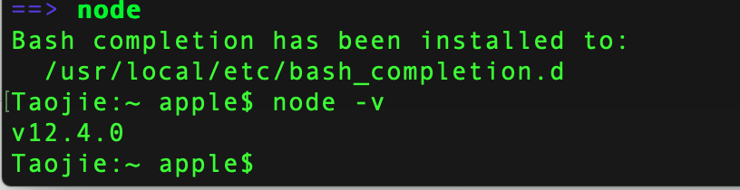

Mac安装vue
一、安装brew
打开终端运行以下命令：
/usr/bin/ruby -e "$(curl -fsSL https://raw.githubusercontent.com/Homebrew/install/master/install)"
配置brew环境变量
Taojie:~ apple$ open .bash_profile
Taojie:~ apple$ source .bash_profile添加brew路径如下：
装成功后，查看一下brew的版本信息：
Taojie:~ apple$ brew -v
Homebrew 2.1.4
Homebrew/homebrew-core (git revision 5c8b; last commit 2019-06-10)
Taojie:~ apple$
二、安装node.js
在终端中运行以下命令：
Taojie:~ apple$ brew install nodejs安装成功后，查看一下node.js的版本信息：
Taojie:~ apple$ node -v
v12.4.0
Taojie:~ apple$ 
3、获取nodejs模块安装目录访问权限
Taojie:~ apple$ sudo chmod -R 777 /usr/local/lib/node_modules/
Password:
Taojie:~ apple$4、安装 淘宝镜像 （npm）
Taojie:~ apple$ npm install -g cnpm --registry=https://registry.npm.taobao.org
5、安装webpack
Taojie:~ apple$ cnpm install webpack -g
6、安装vue脚手架
Taojie:~ apple$ cnpm install vue-cli -g
7、在硬盘上找一个文件夹放工程用的，在终端中进入该目录
Taojie:~ apple$ cd /TJT/vue
Taojie:vue apple$ ls
Taojie:vue apple$ 8、根据模板创建项目
Taojie:vue apple$ vue init webpack-simple vue1Taojie:vue apple$ cd vue1
Taojie:vue1 apple$ 9、安装项目依赖
Taojie:vue1 apple$ cnpm install10、安装 vue 路由模块vue-router和网络请求模块vue-resource
Taojie:vue1 apple$ cnpm install vue-router vue-resource --save11、启动项目
Taojie:vue1 apple$ npm run dev
安装OK后，访问http://localhost:8080如下：
三、在webStorm中启动vue项目：
1、Run In Terminal
2、在终端输入启动命令 npm run dev
Taojie:src apple$ npm run dev
> vue1@1.0.0 dev /TJT/vue/vue1
> cross-env NODE_ENV=development webpack-dev-server --open --hot
Project is running at http://localhost:8081/
webpack output is served from /dist/
404s will fallback to /index.html
{ parser: "babylon" } is deprecated; we now treat it as { parser: "babel" }.
Windows下安装vue：
https://www.cnblogs.com/liluxiang/p/9592003.html 他山之玉可以攻石